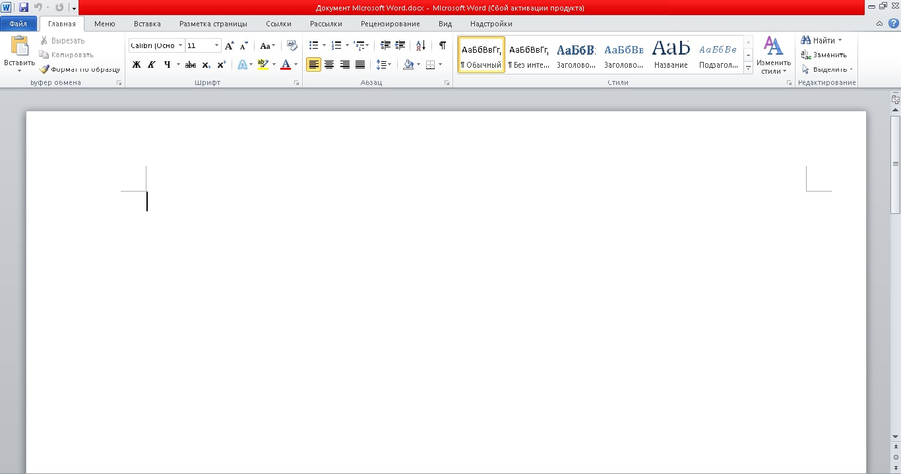
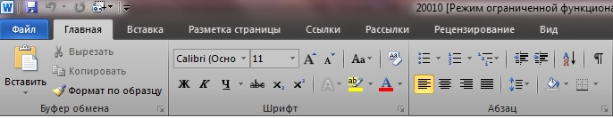
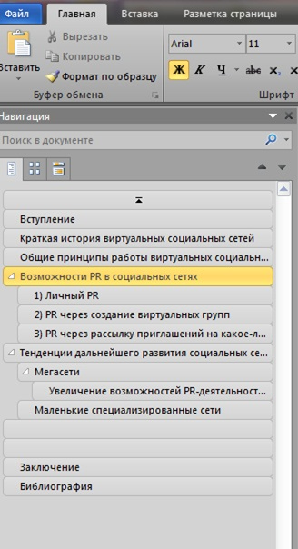
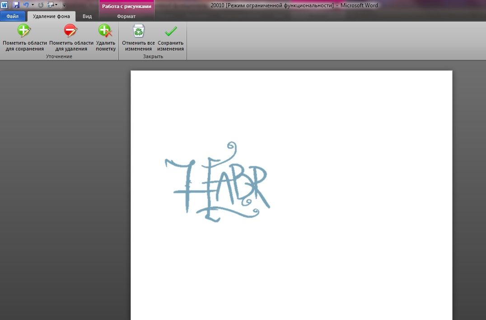

рассмотрим интерфейс word2010 его достоинства и не достатки
вот так выглядит интерфейс word 2010 
Интерфейс довольно приятно выгядит и очень понятен для новых пользоватаелей. Во вкладках видно, что к чему. С таким интерфейсом приятно работать на быстрой машине, так как на слабых он тормазит. Многие задачи довольно быстро делаются, например форматирование текста или вставка объектов.
Управление стало намного яснее и проще. Разработчик улучшил систему так называемого ленточного меню. И теперь вместо большой круглой кнопки Office появилась ничем не примечательная (кроме цвета) кнопка Файл, в которой теперь можно производить все операции с файлом (отправить на печать, сохранить в разных форматах и т.д.).

Теперь автоматически показывается панелька навигации, если Ваш документ разделен на главы и области. Это очень удобно - перемещаться таким образом по документу.

В новой версии можно задать и удалить фон с картинки. 
Согласитесь, не плохо. А также появилась функция взятия скриншота с экрана, как это было реализовано в MS Office 2007 OneNote. При нажатии на кнопку появляются превьюшки других открытых окон, снимок которых можно сделать, а также кнопка для выборочной вырезки экрана.
Встроенный универсальный переводчик поможет при наличии соединения с Интернет переводить несколько слов или часть текста на несколько языков.